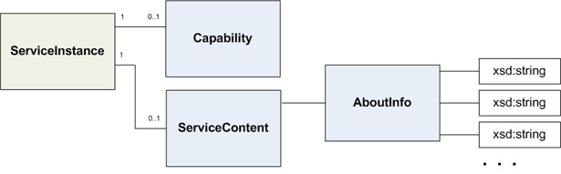

The VMware vSphere management object model is a complex system of data structures designed to provision, manage, monitor, and control the life-cycle of all components that comprise virtual infrastructure. The VMware vSphere management architecture is patterned after Java’s JMX (Java Management Extensions) infrastructure, in which objects are used to instrument other objects, on a remote server.
A “data object type” is a core data structure of the server-side object model. Data objects are similar to abstract data types (in Java) and the struct data type (in C++).The VMware vSphere management object model uses basics object-oriented features, such as composition and inheritance. For example, managed object types are composed of data object types and primitive data types. Some managed object types extend other managed object types, and similarly, some data object types extend other data object types.
Hundreds of data object types have been defined specifically for the VMware vSphere object model. In many cases, one data object type definition includes other data object types (association). A data object type can also include primitive data types, such as string values. (Any primitive data types are defined using the XML Schema primitives—xsd:string, for example.)
|  |
LEGEND
|
For example, the AlarmInfo data object comprises a reference (managed object reference) to the Alarm managed object (of which AlarmInfo is a property) and information such as a unique key, when the alarm was created, and the last user to modify the alarm)—in addition to the properties it inherits from AlarmSpec.
The ManagedObjectReference data object type is a special-purpose data object. Commonly referred to as simply a “reference,” “MoRef,” “MOR,” or other variations of this theme, instances of managed object references contain data that identifies specific server-side managed objects. Managed object references are typically one of the return types from a method invocation, and most method invocations require a managed object reference as a parameter. That means that obtaining managed object references from the target server is key to the programming paradigm. See the Programming Guide for more information.
All data object types are listed in the frame at the left of this page. Click a name to display the reference documentation for the data object. Reference documentation for data object types typically includes:
To quickly find any entry, start typing its name in the Quick Index.
Back to Home